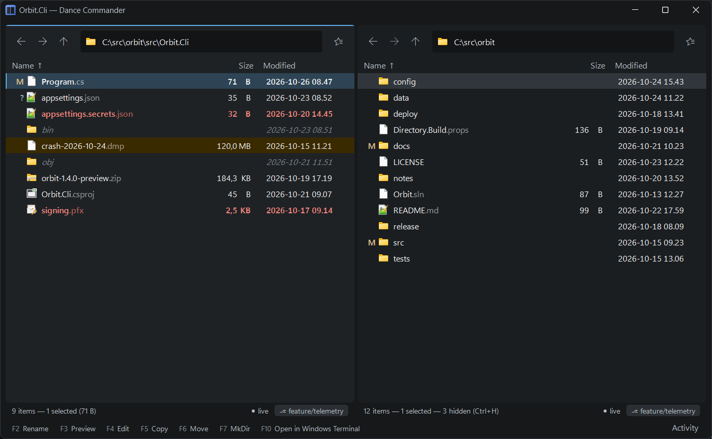

Highlight rules
The application's own chrome is almost colourless on purpose: colour in the listing is yours.
Rules in %APPDATA%\DanceCommander\highlighting.json decide which rows stand out, and
how.
{
"rules": [
{ "name": "Secrets",
"match": { "regex": "(?i)(secret|credential|\\.pem$|\\.pfx$|id_rsa)" },
"foreground": "#FF8B82", "bold": true },
{ "name": "Build output",
"match": { "glob": "{bin,obj,node_modules,.vs,target}", "directoriesOnly": true },
"foreground": "#7E868E", "italic": true },
{ "name": "Big files",
"match": { "minSize": "100MB" },
"background": "#3A2A00" },
{ "name": "Today",
"match": { "newerThan": "12h", "filesOnly": true },
"bold": true, "sortGroup": 1 }
]
}Rules are tried from the top and the first match wins. Save the file and every open listing updates. Comments are allowed, and if the file has a mistake, the app says so and keeps the rules it had.
Out of the box the listing has no colours of its own. The file starts with a few examples to
edit, all switched off: secrets, build output, archives, files over a gigabyte and source files.
Set a rule's "enabled" to true to turn it on.

Matching
All the conditions in one match must hold. The same conditions are used by a tool's
when.
glob | A name pattern: *.log, *.{cs,xaml}, {bin,obj} |
regex | A .NET regular expression against the name. (?i) for case-insensitive |
extensions | A list, without dots: ["zip", "7z", "tar"] |
directoriesOnly, filesOnly | Only folders, or only files |
minSize, maxSize | "512", "100kB", "2MB", "1.5GB" |
newerThan, olderThan | By modified time: "30m", "12h", "7d", "2w" |
Styling
foreground | Text colour, #RRGGBB |
background | Row colour, #RRGGBB |
bold, italic | true or false |
sortGroup | Pins matching rows above the rest. Higher is nearer the top |
enabled | false turns a rule off without deleting it |
A little restraint
A few rules that mean something are worth more than many: once every row is coloured, none of them stand out. Keep red for things that really need care.
Light, dark and high contrast
A rule's colours are used exactly as written, in the dark scheme, in the light one and under
Windows' high contrast themes alike. Unlike the accent colour, they are not adjusted to stay
readable, and a rule can't give one colour for dark and another for light. Pick them for the
scheme you use: the dark listing is #1F2225, the light one #FAFBFC, and
4.5:1 against it is a good aim for text.
The shipped examples' colours are chosen for the dark scheme. On the light one, their red, gold and grey
text is faint and the large-file background makes the text on it hard to read, so if you work in
light, change those colours, or rely on bold and italic, which read the
same in both.